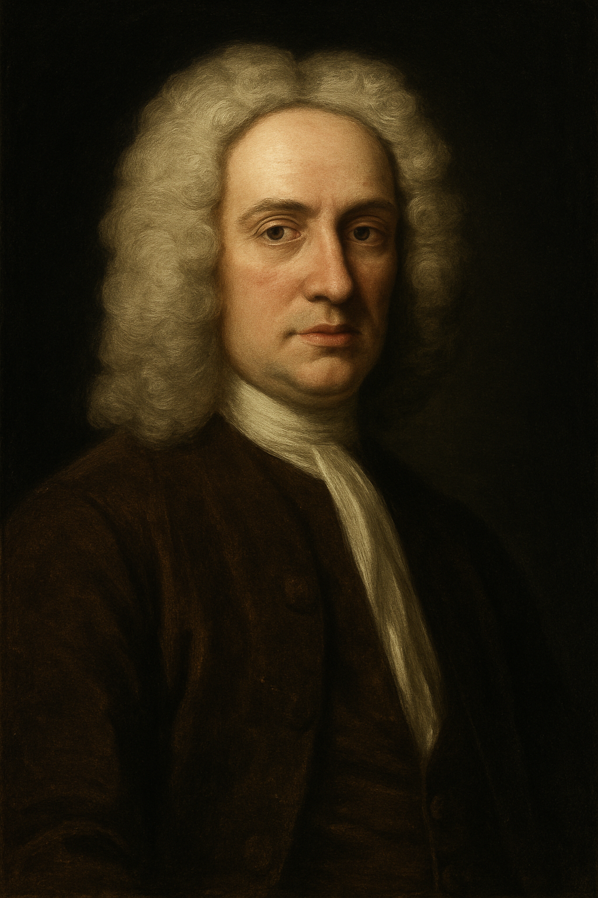

Brook Taylor

Biografia
Brook Taylor (Edmonton, Middlesex, Inglaterra, 18 de agosto de 1685 - Somerset House, Londres, 29 de diciembre de 1731) fue un matemático británico, autor del teorema que lleva su nombre y de destacadas contribuciones al desarrollo del cálculo diferencial.
Nacimiento
Hijo de John Taylor, del Parlamento de Bifrons, y de Olivia Tempest (hija de Sir Nicholas Tempest). Entró en la Universidad de St. John de Cambridge como estudiante en 1701. Se licenció en Derecho en 1709, y se doctoró en 1714. Estudió matemáticas con John Machin y John Keill. En 1708 encontró una importante solución del problema del "centro de oscilación" que, sin embargo, no se publicó hasta mayo de 1714 ("Phylosophycal Transactions of the Royal Society" vol.28), lo que provocó una disputa sobre su autoría con Johann Bernoulli.
Estudios
En su Methodus Incrementorum Directa et Inversa (Londres, 1715) desarrolló una nueva parte dentro de la investigación matemática, que hoy se llama cálculo de las diferencias finitas. Entre las distintas aplicaciones, se usó para determinar la forma del movimiento de una cuerda vibrante, reducido por él por vez primera con éxito a principios mecánicos. El mismo trabajo contenía la famosa fórmula conocida como Teorema de Taylor, cuya importancia solo se reconoció en 1772, cuando Lagrange se dio cuenta de su valor y lo definió como "el diferencial principal del fundamento del cálculo".En su ensayo Nuevos principios sobre la perspectiva lineal (Londres, 1715) Taylor quiso expresar los "nuevos" principios de la perspectiva de modo más original y general que los anteriores; pero el trabajo tuvo problemas por su brevedad, su oscuridad, además de estar faltos de comprobación y de novedad. Estos defectos se pueden aplicar a la mayor parte de sus obras, y de hecho, este trabajo necesitó el perfeccionamiento que desarrollaron Joshua Kirby (1754) y Daniel Fournier (1761).
Las obras de Taylor, «Linear Perspective» y «New Principles on Linear Perspective», se encuentran entre las fuentes más importantes en la historia de la teoría de la perspectiva dentro del arte. Se centran en dos aspectos de esta historia. El primero es el desarrollo, a partir de principios del siglo XVII, de una teoría matemática de la perspectiva donde matemáticos talentosos usaron su creatividad para resolver problemas básicos de perspectiva y simultáneamente se inspiraron para considerar problemas más generales en la geometría proyectiva. Taylor fue una de las figuras clave en este desarrollo. El segundo aspecto se refiere al problema de transmitir los conocimientos adquiridos por los matemáticos a los profesionales. Aunque los libros de Taylor eran matemáticos más que desafiantes, fue el primer matemático que logró que los profesionales se interesaran en enseñar los fundamentos teóricos de la perspectiva. Llegó a ser tan importante en el desarrollo que fue nombrado "el padre de la perspectiva moderna" en Inglaterra. La escuela inglesa de seguidores de Taylor incluía, entre otros, al pintor John Kirby y Joseph Highmore y al científico Joseph Priestley. Según Taylor, el punto de fuga de una línea, que no es paralelo al plano de la imagen, es el lugar donde se intersecan una línea a través del ojo paralela a la dada y el plano que contiene la imagen. También definió la línea de fuga a un plano dado (no paralelo al plano de la imagen), como la intersección del plano dado y de uno paralelo a éste a través del ojo. El teorema más importante de la perspectiva lineal de Taylor dice que la proyección de una recta que no sea paralela al plano de la imagen pasa por su intersección y su punto de fuga.
En su obra «New Principles on Linear Perspective», Brook Taylor afirmaba: "Generalmente se piensa que es muy ridículo pretender escribir un poema heroico, o un buen discurso sobre cualquier tema, sin comprender las propiedades del lenguaje escrito; y a mí no me parece menos ridículo que alguien pretenda hacer una buena imagen sin entender la perspectiva ...".
Después de su traducción al italiano, español y al francés en la década de 1750, el trabajo de Taylor se hizo popular en todo el continente.
Brook Taylor fue elegido miembro de la Royal Society a principios de 1712 y el mismo año pasó a formar parte del comité para el juicio sobre la disputa entre Sir Isaac Newton y Gottfried Leibniz. Desde el 13 de enero de 1714 al 21 de octubre a 1718 fue secretario de la sociedad. Desde 1715 sus estudios dieron un giro filosófico y religioso. A partir de este año mantuvo correspondencia con Pierre Rémond de Montmort sobre las doctrinas de Nicolas Malebranche; a raíz de ello, se encontraron entre sus cartas y documentos inacabados tratados Sobre los sacrificios hebreos y Sobre la legitimidad de comer sangre, escritos por él a su regreso de Aquisgrán en 1719.
Matrimonio
Su matrimonio en 1721 con una dama de Wallington, Surrey le enemistó con su padre, que acabó en 1723 tras la muerte de su mujer durante el parto, en el que también murió el niño. Los dos años siguientes los pasó con su familia en Bifrons; en 1725 se casó, esta vez con la aprobación de su padre, con Sabetta Sawbridge de Olantigh, que también murió de parto en 1730; en esta ocasión, sin embargo, su hija sobrevivió. Su frágil salud hizo que su estado degenerara con rapidez; murió en Somerset House, y la enterraron en la iglesia de St Ann's, Soho. Desde la muerte de su padre (1729) había heredado la propiedad de Bifrons. Como matemático, era el único inglés tras Isaac Newton y Roger Cotes capaz de competir con matemáticos como Johann Bernoulli. Sin embargo, gran parte de los resultados de su demostración no tuvieron repercusión o se perdieron a causa de su incapacidad de expresar sus ideas completamente y con claridad.
Últimos Estudios
Un trabajo póstumo titulado Contemplatio Philosophica fue impreso en 1793 por su sobrino, Sir William Young, que tenía un prólogo sobre la vida del autor y las cartas recibidas por Bolingbroke y Bossuet. Muchos de sus artículos breves se publicaron en las "Phylosophycal Transactions of the Royal Society", volúmenes del 27 al 33, incluyendo los informes de algunos experimentos interesantes sobre el magnetismo y sobre la atracción del vaso capilar. Publicó en 1719 una versión mejorada de su trabajo sobre la prospectiva, con el título Nuevos principios de la prospectiva lineal, revisada por Colson en 1749, e impresa con el retrato y la biografía del autor en 1811.Taylor en su obra Methodus Incrementorum hizo una primera aproximación completa sobre la refracción astronómica.
En 1715, Taylor halló que el movimiento de un punto arbitrario de la cuerda es equivalente al de un péndulo simple y determina su tiempo de vibración (periodo). Obtiene en su lenguaje propio, un tanto distinto del actual, la ecuación diferencial de la cuerda vibrante, es decir, la ecuación unidimensional de ondas, y a partir de ella determina una solución: la forma de la curva que toma la cuerda en un instante dado es sinusoidal.